Tout le reste, juste en haut
Les menus de l'app active, le son et la luminosité, le calendrier, les notifications et la recherche partent tous d'une seule barre en haut. Cliquer dessus ne retire jamais le focus à l'app dans laquelle vous tapez.
Barre des menus
Les menus de l'app active, en haut
Les apps qui ont des menus les affichent tels quels. Pour celles qui n'en ont pas, comme les navigateurs, l'Explorateur de fichiers ou Notion, vous obtenez un menu de leurs raccourcis courants. Cliquez sur un élément et le raccourci part directement vers l'app, pratique quand les touches passent mal, par exemple en bureau à distance.
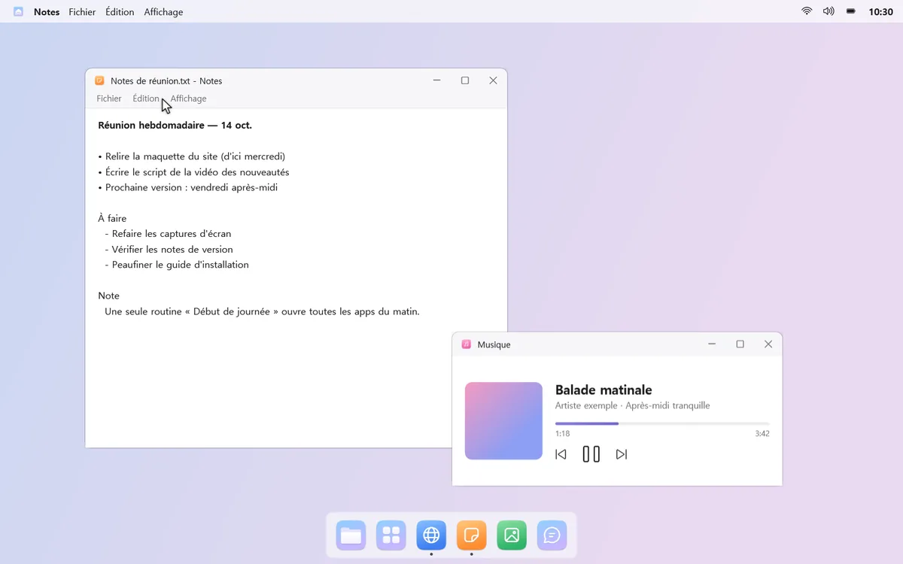
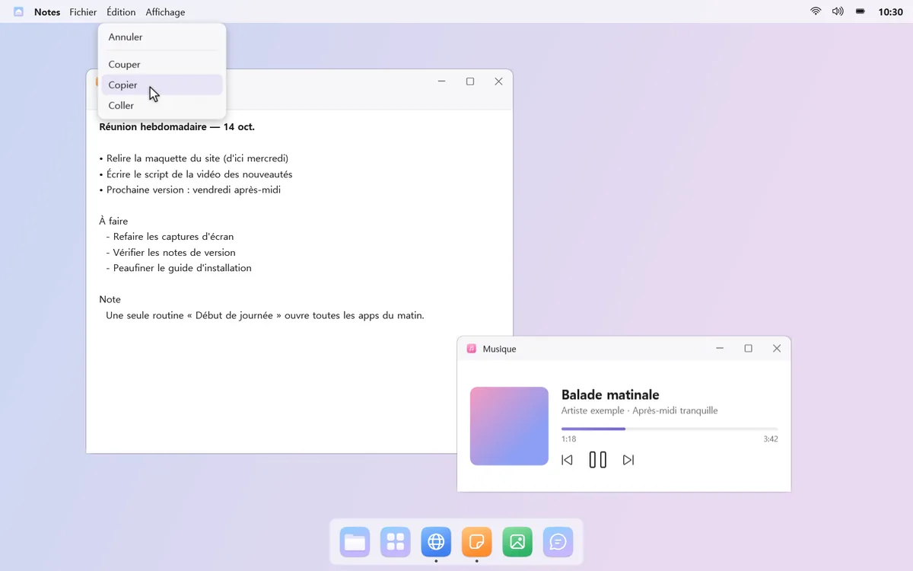
Son et luminosité en un clic
Le Centre de contrôle met à portée de main la luminosité de l'écran, l'éclairage nocturne et le mode d'alimentation. Le menu Son change les périphériques de sortie et d'entrée et le volume, et le menu Bluetooth connecte vos écouteurs en un clic.

Cliquez sur l'horloge pour le calendrier
Le calendrier affiche les jours fériés coréens et les dates lunaires (les jours fériés des autres pays ne sont pas encore disponibles). Collez une adresse iCal de Google Agenda ou d'Outlook.com pour y voir aussi vos événements.
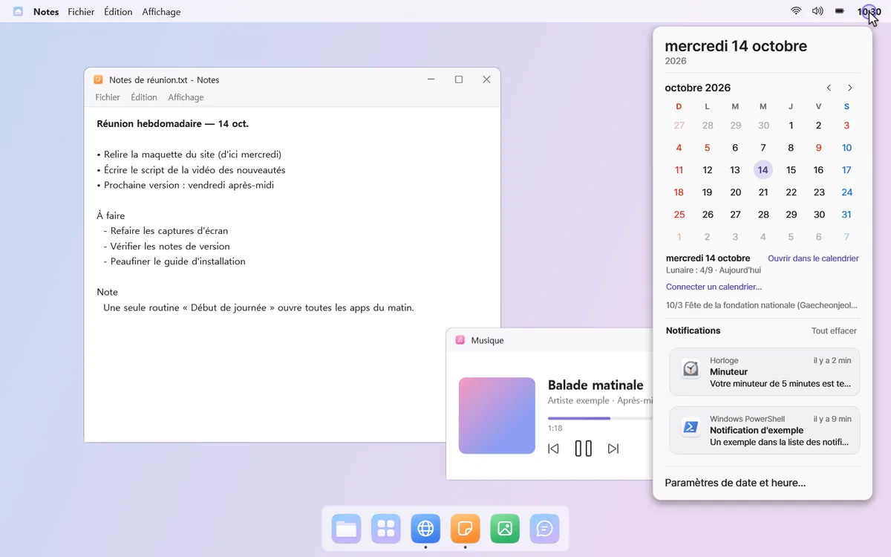
Notifications
Des bannières discrètes en haut à droite
Les notifications Windows apparaissent en bannières en haut à droite, et les longues se déplient d'un clic. Vous avez manqué quelque chose ? Cliquez sur l'horloge pour voir les notifications regroupées par app.
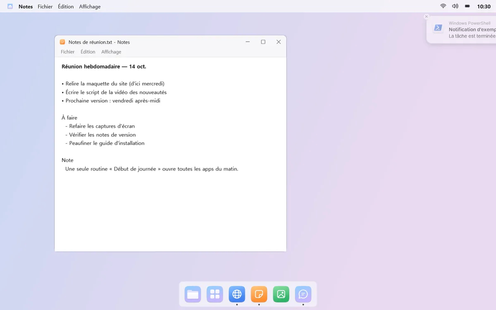
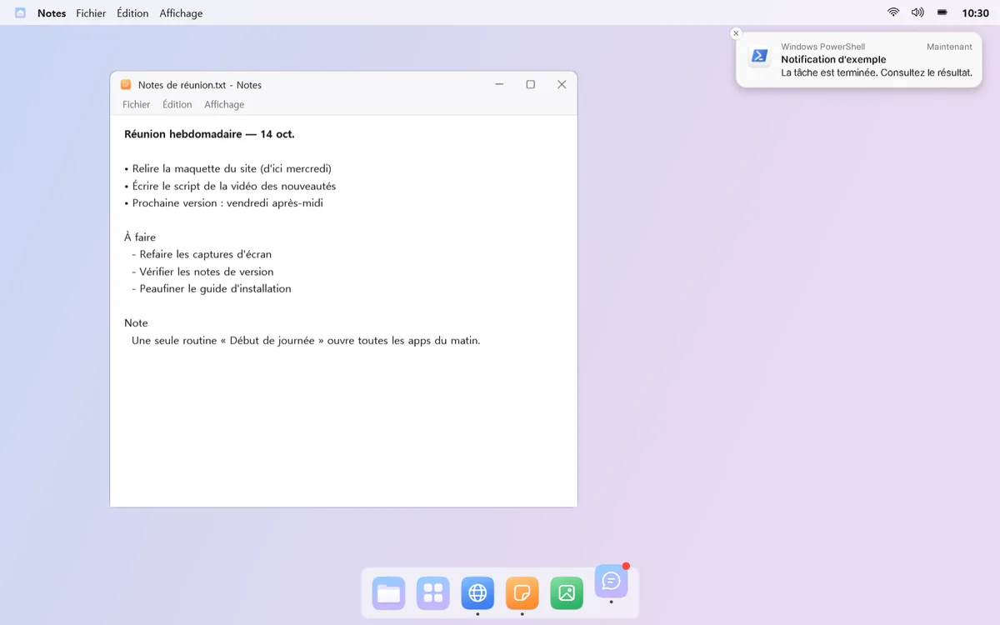
Deux rebonds, puis un point
Quand une notification arrive, l'icône de l'app dans le Dock rebondit deux fois et laisse un point rouge. Elle ne rebondit pas sans fin, et vous pouvez désactiver cela app par app.
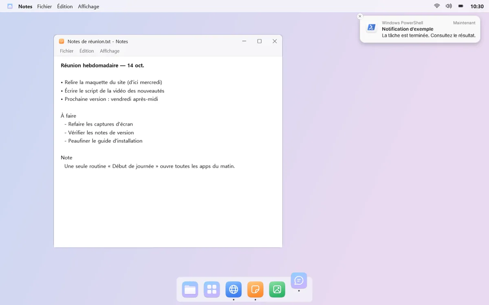
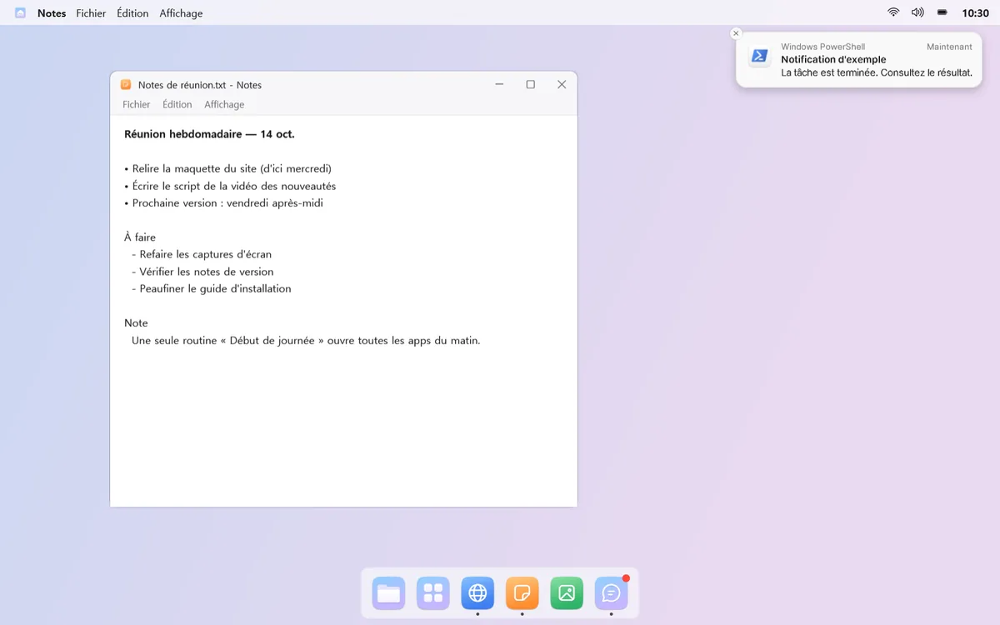
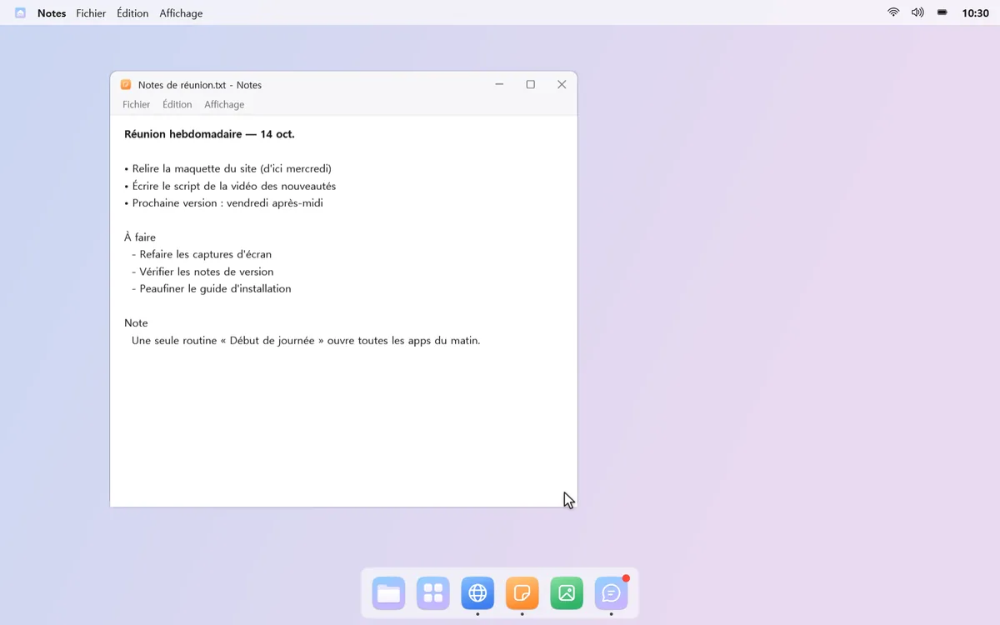
Recherche mongdock
Trouvé en quelques touches
Appuyez sur un raccourci et un champ de recherche s'ouvre au centre de l'écran. Trouvez apps, paramètres Windows, fichiers ou dossiers en quelques touches, par exemple « ca » pour la Calculatrice.
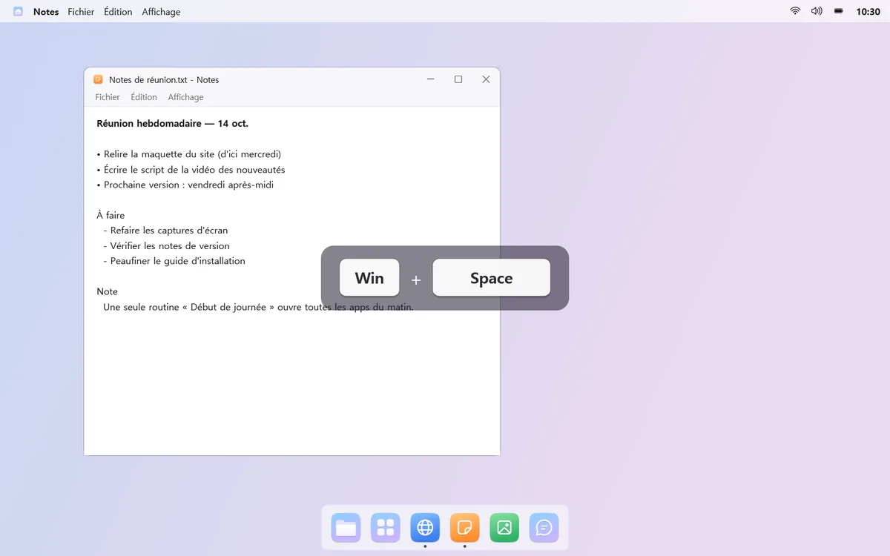
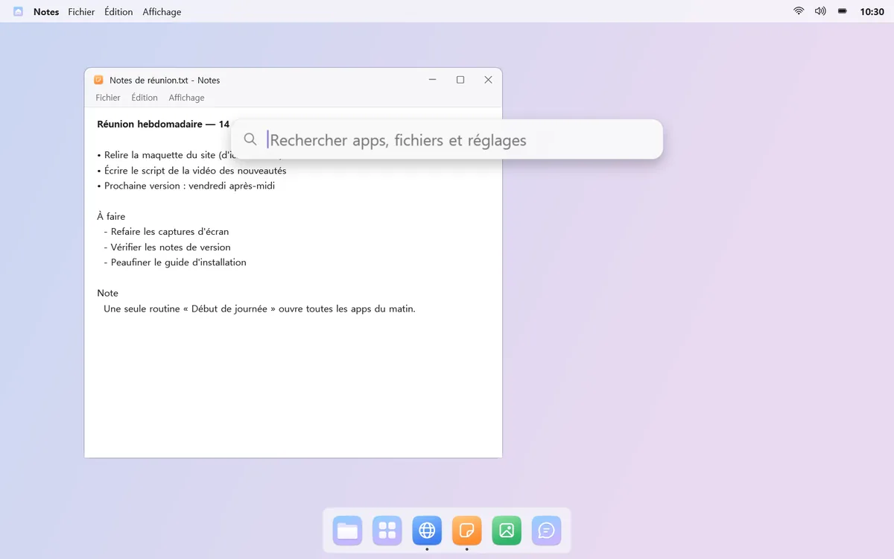
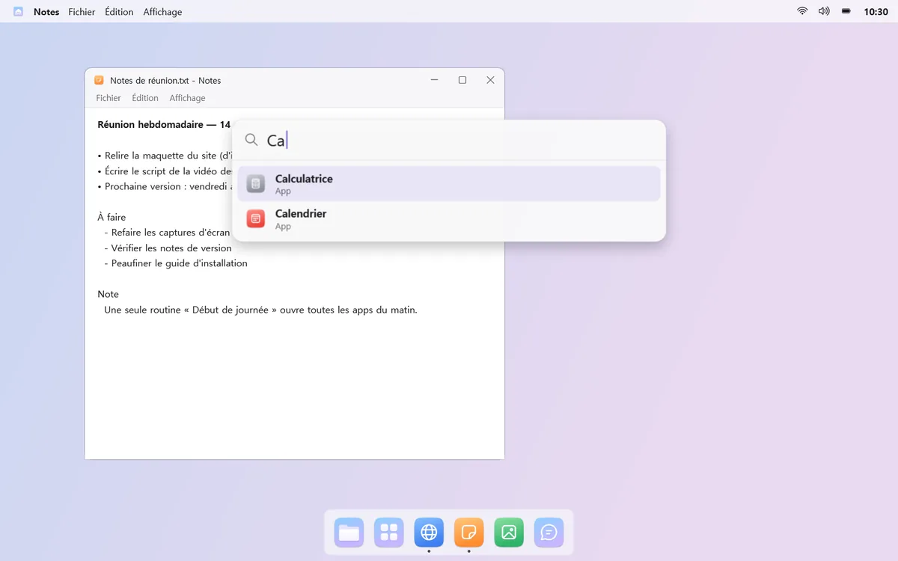
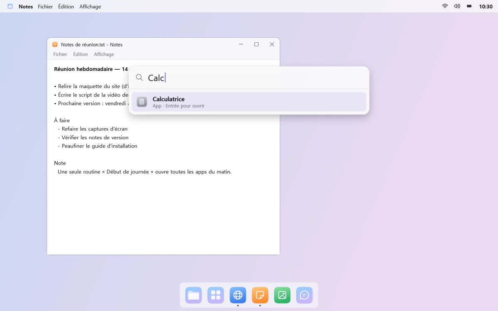
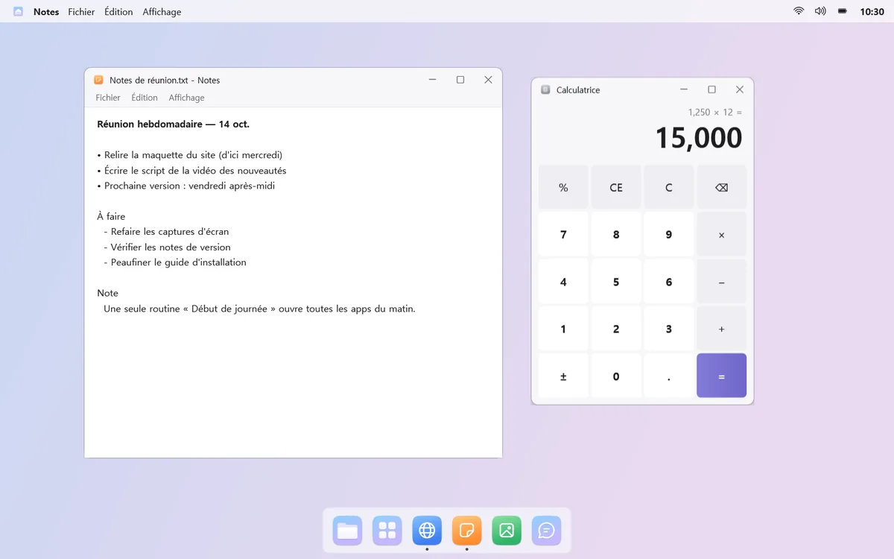
Calcul rapide et recherche web, aussi
Tapez par exemple « 200*15% » et le résultat apparaît en haut ; appuyez sur Entrée pour le copier. Rien trouvé ? Envoyez la même recherche à Windows Search ou sur le web.

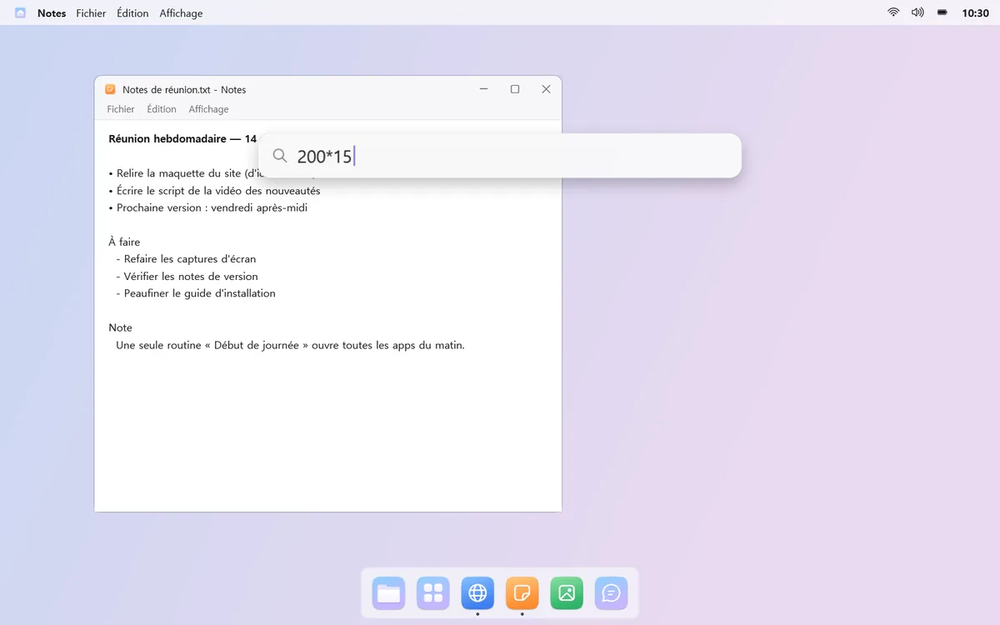
Bon à savoir
- Après avoir changé le son des notifications pour la première fois, déconnectez-vous puis reconnectez-vous pour qu'il prenne effet.
- La luminosité des moniteurs externes ne se règle que sur les moniteurs compatibles (DDC/CI).